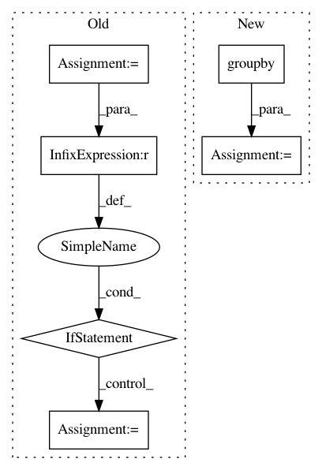

21608a6b6e6883504a0bcb06abbf9c7d8029897b,ann_benchmarks/distance.py,,transform_dense_to_sparse,#,17
Before Change
indices = np.transpose(np.where(X))
keys = []
l = []
last_i = None
for i, j in indices:
if last_i != None and last_i != i:
keys.append(l)
l = []
l.append(j)
last_i = i
keys.append(l)
After Change
// get list of indices of non-zero elements
indices = np.transpose(np.where(X))
keys = []
for _, js in itertools.groupby(indices, lambda ij: ij[0]):
keys.append([j for _, j in js])
assert len(X) == len(keys)
return keys
In pattern: SUPERPATTERN
Frequency: 3
Non-data size: 6
Instances
Project Name: erikbern/ann-benchmarks
Commit Name: 21608a6b6e6883504a0bcb06abbf9c7d8029897b
Time: 2019-07-21
Author: maau@itu.dk
File Name: ann_benchmarks/distance.py
Class Name:
Method Name: transform_dense_to_sparse
Project Name: mittagessen/kraken
Commit Name: 6e6c12425a787d8c954ce5c31ceed59cdd531001
Time: 2018-05-20
Author: mittagessen@l.unchti.me
File Name: kraken/lib/ctc_decoder.py
Class Name:
Method Name: greedy_decoder
Project Name: has2k1/plotnine
Commit Name: 666b01f0a3c060be93b804b27814af58e1e50aac
Time: 2020-03-21
Author: has2k1@gmail.com
File Name: plotnine/aes.py
Class Name:
Method Name: reorder